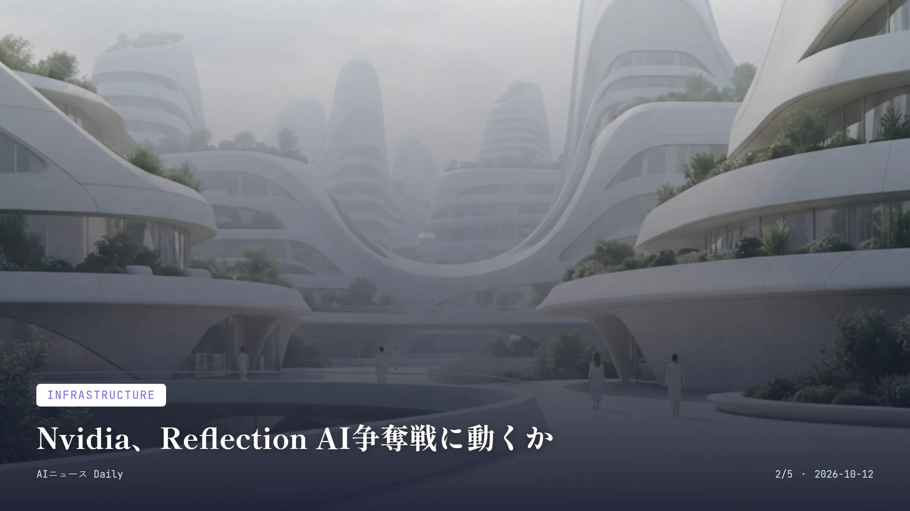
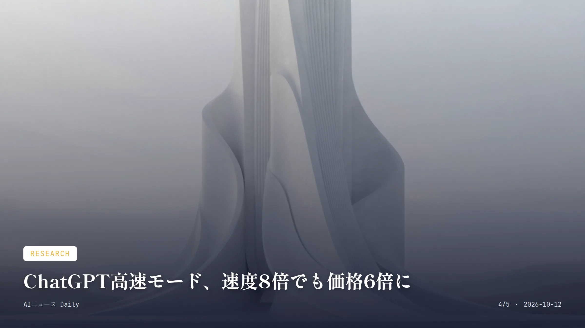

これは2026-10-12時点のアーカイブページです。最新のニュースはこちら
本サイトはアフィリエイトプログラムによる収益を得ている場合があります。
本サイトはGoogle AdSense等の広告配信サービスを利用しています。
約2分で読める
Amazon、Decart買収へ70億ドル規模の交渉
Anthropicが撤退した買収先に、今度はAmazonが交渉
70億ドルAmazonが提示したとされる買収額
4億ドル超Decartのこれまでの累計調達額
Amazonが、AI新興企業Decartの買収について話し合いを進めていることが分かった。The Wall Street Journalが10月11日、関係者の話として報じたもので、取引額は70億ドル規模に膨らむ可能性があるという。
Decartが手がけるのは、開発者が異なる半導体をまたいでAIモデルを柔軟に動かせるようにするソフトウェアだ。リアルタイムで映像編集ができるモデル「Lucy」、さらにロボティクスや自動運転システムの訓練・試験のために仮想環境を作り出す「Oasis」も開発している。
実はこのDecart、Anthropicが一時60億ドル規模での買収に向けデューデリジェンスまで進めていた相手。それが9月に白紙に戻っている。Amazonは既にAnthropicの主要出資者でもあり、自分が支えている会社が一度見送った買収先を、今度は自ら追いかけるという妙な構図になっている。
なぜ重要か
コンピュート争奪戦のただ中で、特定の半導体に縛られないソフトウェアの価値が急上昇していることがよく分かる事例だ。AmazonはAnthropicの主要出資者でありながら、Anthropicが撤退した買収先を自ら追いかけており、大手クラウド各社がAIインフラの主導権をめぐってせめぎ合う構図が一段と強まっている。日本でも国内クラウド事業者が複数ベンダーのチップを使い分ける動きが出ており、同種の技術需要は国内でも高まりそうだ。
AmazonDecartM&AAIチップ

Infrastructure
約2分で読める
Nvidia、Reflection AI争奪戦に動くか
既に8億ドル出資のAI新興、買収も視野に
8億ドルNvidiaが既に出資した金額
250億ドルReflection AIの評価額
NvidiaがAI新興企業Reflection AIへの追加出資、あるいは買収そのものについて協議していると、Financial Timesが10月10日に報じた。
関係者によれば協議はまだ初期段階で、人材と技術を取り込む「アクハイア」方式を含め複数の形が検討されているという。この手法なら、長引きがちな規制当局の審査を回避できる可能性がある。
Nvidiaは既にReflection AIに8億ドルを出資している大株主だ。Reflectionは2026年のラウンドで250億ドルの評価額をつけたとされ、元DeepMind研究者らが2024年に立ち上げた会社で、ソフトウェア開発を自動化するオープンウェイトモデルを手がけている。
なぜ重要か
Nvidiaはチップを売るだけでなく、オープンウェイトモデルを開発する企業への出資・買収を通じて、OpenAIやAnthropic、Googleといった閉鎖的な大手モデル勢に対抗する陣営を育てようとしている。チップ大手がモデル開発企業を事実上取り込む動きは、業界の勢力図を塗り替えかねない。日本でも大手クラウドや通信各社がオープンモデルの採用を検討しており、こうした海外の再編は国内の技術選定にも波及しそうだ。
NvidiaReflection AI買収オープンウェイト
Consumer Apps
約2分で読める
Claudeに新機能、資料作成はどう変わる？
Docs・Slides・Designが無料プランでも使い放題に
4500万件超Claudeでこれまでに作成された文書・資料の件数
2026年10月9日新機能が発表された日（日本時間）
Anthropicが10月上旬、新機能「Claude Dashboards」と「Claude Motion」をベータ版として公開した。あわせて、これまで一部プラン限定だった「Docs」「Slides」「Design」も、無料プランを含む全プランで使えるようになっている。
Dashboardsは有料プラン向け機能で、Redshift、BigQuery、Snowflakeなどのデータ基盤とつなぎ、自然言語での質問からダッシュボードを自動で作ってくれる。Motionはチーム・エンタープライズプラン向けで、指示文から説明用アニメーションを作成し、MP4として書き出せる。
Anthropicによれば、Claude上でこれまでに生まれた文書・プレゼン資料・デザインは4500万件を超えるという。
なぜ重要か
これまで有料プラン限定だった文書・資料作成機能が無料でも使えるようになったことで、学生や個人ユーザーも含め裾野が広がりそうだ。企業向けのダッシュボード機能やアニメーション生成機能がいずれ個人向けプランにも広がれば、日常の資料作成の手間が大きく変わる可能性がある。日本でも大学や企業でClaudeの導入が進んでおり、今回の無料開放は利用者増につながりそうだ。
AnthropicClaudeDashboardsMotion

Research
約1分で読める
ChatGPT高速モード、速度8倍でも価格6倍に
速度は最大8倍、でも料金は6倍に跳ね上がる
最大8倍Codexでの速度向上（Ultrafastモード）
6倍標準モードに対する利用料金の倍率
OpenAIが、コーディングやエージェント処理向けモデル「GPT-6.1 Sol」の高速版「Ultrafast」モードを発表した。Codex上では標準版に比べ最大8倍、APIでは最大6倍のトークン生成速度が出るという。
気になる料金は入力100万トークンあたり12ドル、出力60ドル。標準モード（入力2ドル、出力10ドル）のちょうど6倍だ。提供開始時点ではChatGPT WorkおよびCodex上で、上位プラン「Pro 500」や対象の企業・教育機関向けプランに限定されており、Plus、Businessなどでは使えない。
なぜ重要か
AIの進化が「賢さ」だけでなく「速さ」にも軸足を広げていることを象徴する発表で、コーディング支援やリアルタイムのエージェント処理など、応答速度がものを言う場面での活用が進みそうだ。とはいえ高速モードの料金は標準の6倍で、提供開始時点では上位プランや企業・教育機関向けプランに限られており、恩恵を受けられるユーザーは当面限定的だろう。日本でも企業向けプランを導入する大学や大企業が先に恩恵を受け、個人の無料・低価格プラン利用者との差が広がる可能性がある。
OpenAIChatGPTGPT-6.1 SolUltrafast
Work & Labor
約2分で読める
AIによる人員整理、銀行にも拡大していた
Standard Charteredやみずほなど、相次ぐ削減の裏側
7000人超Standard Charteredが4年間で見込む削減数
5000人みずほが今後10年で想定する削減規模
AIを理由にした人員削減が、これまで目立っていたテクノロジー業界だけでなく銀行など他業種にも広がっていることが、ロイターがまとめた集計で分かった。2025年後半以降に発表された削減事例を一覧化したもので、10月6日に報じられ、DigiconAsiaなどが10月8日付で伝えている。
具体的に見ると、Standard Charteredは2026年5月、4年間で7000人超の削減方針を発表した。みずほは今後10年で最大5000人規模の削減を計画しているとされ、スウェーデンのSEBは2027年末までに最大2100人、デンマークのDanske Bankは420人、ノルウェーのDNBも約400人の削減を発表している。
各社とも人員削減を単なるコスト削減ではなく「AIによる変革」の一環と位置づける傾向が強まっており、顧客対応やコンプライアンスチェック、ソフトウェアテストといった業務の自動化が背景にあるとされる。
なぜ重要か
AIによる人員削減が、これまで目立っていた米テック企業だけでなく、規制の厳しい銀行という伝統的業界にまで広がっていることを示すデータで、ホワイトカラー職の先行きに警鐘を鳴らしている。みずほが削減企業の一つとして名指しされており、日本の金融機関も他人事ではない。
AI人員削減銀行みずほ
Work & Labor
Work & Labor
約1分で読める
AIは仕事を奪うより変える、4割が生産性向上に活用
4割が人員を増やさず生産性向上に活用と回答
40%AIで既存社員の生産性向上を期待する経営層の割合
28%AIで人員削減を見込む経営層の割合
人事・財務向けクラウドサービスを手がけるWorkdayが10月5日、2026年版「Global Workforce Report」を発表した。この調査から見えてきたのは、多くの経営層がAIによって人員が減るとは考えていない、という実態だ。
具体的には、回答した経営層の40%が「既にいる社員からより多くの成果を引き出すためにAIを活用したい」と答えた一方、人員削減につながると見ているのは28%にとどまった。
なぜ重要か
AIが人員削減よりも既存社員の生産性向上に使われると考える経営層が多いという結果は、AIによる大量失業論に一石を投じる内容だ。労働力不足が深刻な日本では、人員削減よりも「今いる人材の生産性を上げる」という使い方の方が実情に合っているかもしれず、海外の調査結果がそのまま当てはまるかは見極めが必要だ。
Workday雇用生産性調査
先頭に戻る